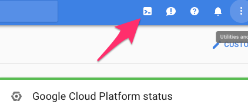

Step Zero: Kubernetes on Google Cloud¶
Google Kubernetes Engine (GKE) is the simplest and most common way of setting up a Kubernetes Cluster. You may be able to receive free credits for trying it out (though note that a free account comes with limitations). Either way, you will need to connect your credit card or other payment method to your google cloud account.
Go to
https://console.cloud.google.comand log in.Enable the Kubernetes Engine API.
Use your preferred command line interface.
You have two options: a) use the Google Cloud Shell (no installation needed) or b) install and use the gcloud command-line tool. If you are unsure which to choose, we recommend beginning with option “a” and using the Google Cloud Shell. Instructions for each are detailed below:
Use the Google Cloud Shell. Start the Google Cloud Shell by clicking the button shown below. This will start an interactive shell session within Google Cloud.
See the Google Cloud Shell docs for more information.
Install and use the gcloud command line tool. This tool sends commands to Google Cloud and lets you do things like create and delete clusters.
- Go to the gcloud command line tool downloads page to download and install the gcloud command line tool.
- See the gcloud documentation for more information on the gcloud command line tool.
Install
kubectl, which is a tool for controlling kubernetes. From the terminal, enter:gcloud components install kubectl
Create a Kubernetes cluster on Google Cloud, by typing the following command into either the Google Cloud shell or the gcloud command-line tool:
gcloud container clusters create <YOUR-CLUSTER> \ --num-nodes=3 \ --machine-type=n1-standard-2 \ --zone=us-central1-b
where:
--num-nodesspecifies how many computers to spin up. The higher the number, the greater the cost.--machine-typespecifies the amount of CPU and RAM in each node. There is a variety of types to choose from. Picking something appropriate here will have a large effect on how much you pay - smaller machines restrict the max amount of RAM each user can have access to but allow more fine-grained scaling, reducing cost. The default (n1-standard-2) has 2CPUs and 7.5G of RAM each, and might not be a good fit for all use cases!--zonespecifies which data center to use. Pick something that is not too far away from your users. You can find a list of them here.
Note
Consider setting a cloud budget for your Google Cloud account in order to make sure you don’t accidentally spend more than you wish to.
To test if your cluster is initialized, run:
kubectl get node
The response should list three running nodes.
Give your account super-user permissions, allowing you to perform all the actions needed to set up JupyterHub.
kubectl create clusterrolebinding cluster-admin-binding \ --clusterrole=cluster-admin \ --user=<YOUR-EMAIL-ADDRESS>
Congrats. Now that you have your Kubernetes cluster running, it’s time to begin Creating your JupyterHub.